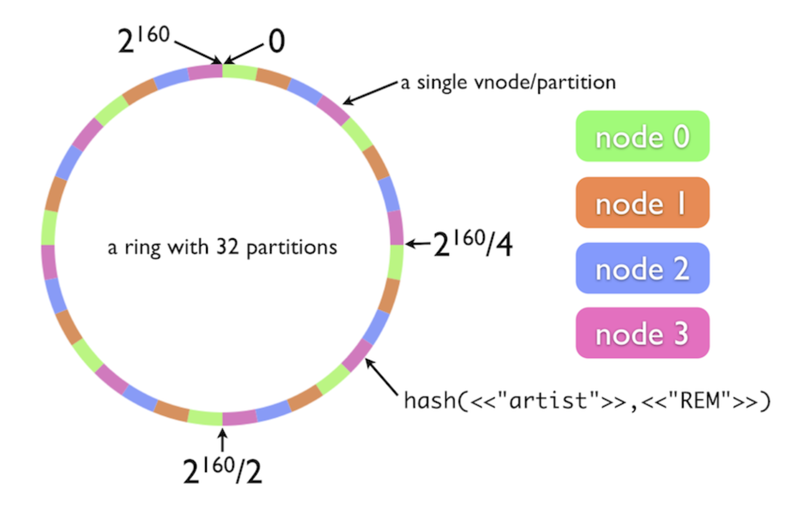

What’s Riak Core?
Francisco Krause Arnim
1. CAP Theorem:

1.1. Statement:
- We’re talking mostly in a distributed database systems (nodes) context.
- C: Consistency.
- A: Availability.
- P: Partition Tolerance.
- We can only have two of the three at the same time.
1.2. Clarification
1.3. Visual Representation:

1.4. Simplifying:
- A distributed system should work even with network failures, so we need P.
- We have two choices then:
- A+P: Always available, partition-tolerant.
- C+P: Consistent, partition-tolearnt
2. Riak Core
2.1. What is it?
- Erlang Framework.
- Based on the Dynamo Paper.
Open Source base for Riak K-V, TS and others.
2.2. Dynamo:
- NoSQL (Key-Value).
- A+P, with eventual consistency.
- Easily scalable.
- Tunable AP system.
Latency sensitive applications, < 300 ms for 99% of requests.
2.3. Tunable AP:
2.3.1. Eventually Replicate to 3 Nodes

2.3.2. Write 2 Nodes before answering

2.3.3. Read 2 before answering

2.4. Keep this in mind for now:

2.5. Riak Core provides:
2.5.1. Virtual Nodes:
- We can think about them ’like’ running Riak Core instancies.
- They share behaviour.
- Distribute work between them.
- Many in a same server.
- They share the ring.
2.5.2. Consistency Hashing:
- A given key is turned into a number.
- The number determines in which part of the ring the key ends up.
- Cheap to reassign keys if a node fails.
2.5.3. Handoff:
- The way in which keys are distributed among keys.
- Each node has a portion of the ring.
- Each node may have a back-up
2.6. Let’s see it again
3. What I’ve been doing:
3.1. Tutorial:
- A couple of years ago, Lambdaclass wrote a tutorial about Riak Core
- It’s mostly how to set it up using Erlang.
- The result is a Key-Value store.
3.2. Issues:
- It was some OTP versions behind of the current one.
- We were using a Riak Core fork.
- rebar3 configs not working as expected.
- Deprecated modules in OTP 25 (eg: peer vs slave).
3.3. Solution:
- Opening issues on Github.
- Erlang slack.
- Erlang forums.
- Reading source code.
3.4. Result:
- It turned out that the peer module is really new.
- The rebar3 config error turned out to be a rebar3 bug.
3.4.1. Rebar’s latest release:
4. What I’m currently doing:
4.1. Elixir + Riak Core:
- I’m doing something similar to the Erlang tutorial, but with Elixir.
- The plan is to also be able to easily use Riak Core